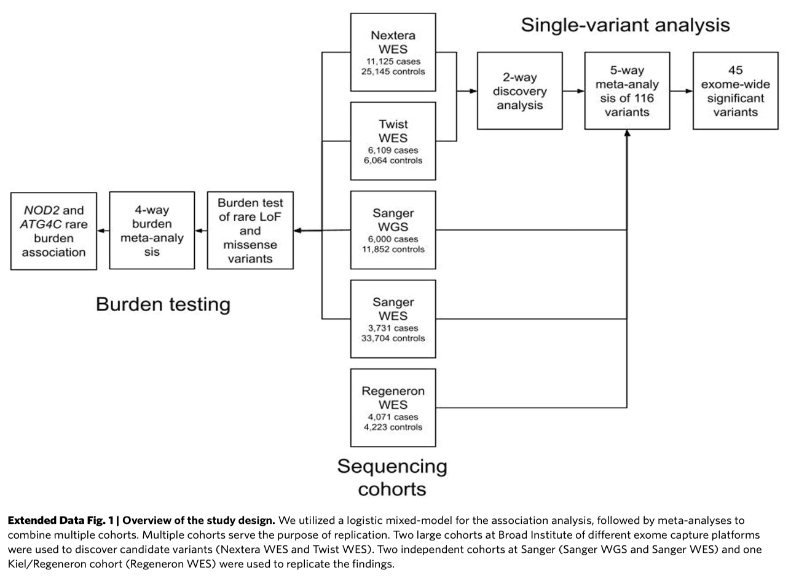

Last updated: 2025-02-03
Checks: 6 1
Knit directory: GradPLog/
This reproducible R Markdown analysis was created with workflowr (version 1.7.1). The Checks tab describes the reproducibility checks that were applied when the results were created. The Past versions tab lists the development history.
The R Markdown file has unstaged changes. To know which version of
the R Markdown file created these results, you’ll want to first commit
it to the Git repo. If you’re still working on the analysis, you can
ignore this warning. When you’re finished, you can run
wflow_publish to commit the R Markdown file and build the
HTML.
Great job! The global environment was empty. Objects defined in the global environment can affect the analysis in your R Markdown file in unknown ways. For reproduciblity it’s best to always run the code in an empty environment.
The command set.seed(20220610) was run prior to running
the code in the R Markdown file. Setting a seed ensures that any results
that rely on randomness, e.g. subsampling or permutations, are
reproducible.
Great job! Recording the operating system, R version, and package versions is critical for reproducibility.
Nice! There were no cached chunks for this analysis, so you can be confident that you successfully produced the results during this run.
Great job! Using relative paths to the files within your workflowr project makes it easier to run your code on other machines.
Great! You are using Git for version control. Tracking code development and connecting the code version to the results is critical for reproducibility.
The results in this page were generated with repository version effd6aa. See the Past versions tab to see a history of the changes made to the R Markdown and HTML files.
Note that you need to be careful to ensure that all relevant files for
the analysis have been committed to Git prior to generating the results
(you can use wflow_publish or
wflow_git_commit). workflowr only checks the R Markdown
file, but you know if there are other scripts or data files that it
depends on. Below is the status of the Git repository when the results
were generated:
Ignored files:
Ignored: .DS_Store
Ignored: .Rproj.user/
Unstaged changes:
Modified: analysis/2025.Rmd
Note that any generated files, e.g. HTML, png, CSS, etc., are not included in this status report because it is ok for generated content to have uncommitted changes.
These are the previous versions of the repository in which changes were
made to the R Markdown (analysis/2025.Rmd) and HTML
(docs/2025.html) files. If you’ve configured a remote Git
repository (see ?wflow_git_remote), click on the hyperlinks
in the table below to view the files as they were in that past version.
| File | Version | Author | Date | Message |
|---|---|---|---|---|
| Rmd | effd6aa | “John | 2025-02-01 | update |
| Rmd | 390b75e | “John | 2025-01-31 | update |
| html | 390b75e | “John | 2025-01-31 | update |
Current Research on IBD
This section summarize the WES and GWAS studies on IBD, giving background information on the disease and current research on the diease.
Disease Background
General Background of IBD
IBD is Chronic inflammation influenced by genetics, environment, microbiota, and immunity.
Genetic Contribution
Crohn’s Disease (CD): 15% family history; twin studies show 50% concordance in monozygotic (MZ) twins vs. less than 10% in dizygotic (DZ) twins.
GWAS identified 163 loci; trans-ethnic studies identified an additional 38 loci.
Epigenetics
Genome-environment interactions affect disease progression.
Emerging research focuses on the role of epigenetics in IBD.
Genetic Associations in IBD
NOD2: First CD-associated gene (2001), with key variants R702W and G908R.
Autophagy Genes: ATG16L1, LRRK2, and IRGM predispose individuals to IBD.
IL-10 Receptor Mutations: IL10RA, IL10RB are linked to colitis.
IBD-Associated Loci: ~240 loci identified (as of 2022); 30 shared between CD and UC.
CD Predictive Loci: FOXO3, IGFBP1, and XACT as potential markers.
Large-Scale Exome Sequencing Identifies Novel Genes and Pathways in Crohn’s Disease
Sazonovs, Aleksejs et al.
Motivation
CD is a chronic inflammatory disorder with a strong genetic component.
GWAS has primarily focused on common variants, but rare coding variants remain under-explored.
Study Design

Findings
- Single Variant Analysis: 94 out of 116 variants replicated in discovery datasets.

Burden Test: Missense vs. frameshift variants analyzed.
 #### Takeaways
#### TakeawaysExome Sequencing Complements GWAS
- Addresses gaps in genetic architecture (low-frequency and rare variants) that earlier CD GWAS meta-analyses could not observe.
Significance of Coding Variants:
- Coding variants, although fewer than noncoding variants, are highly enriched for associations with both common and rare diseases.
- Tend to have stronger effects due to natural selection, which often keeps their frequencies low.
- Provide direct links to specific genes and pathogenic mechanisms, unlike noncoding variants.
Key Findings in CD Pathogenesis:
- Novel genes such as PDLIM5, SDF2L1, HGFAC, PAF-R, and CCR7 emphasize the role of mesenchymal cells (MCs) in intestinal inflammation.
Therapeutic Implications:
- Findings highlight the potential for therapeutic strategies targeting mesenchymal niche balance to address CD pathogenesis.
- Genetic evidence for drug targets is valuable for driving drug development.
Future Directions:
- Expanded sequencing efforts in ulcerative colitis and integrated analyses with larger GWAS studies are expected to identify more linked genes.
Genome-wide association study implicates immune activation of multiple integrin genes in inflammatory bowel disease
de Lange, K., Moutsianas, L., Lee, J. et al.
Motivation
Current treatments involve immunomodulators, but patients often experience side effects or treatment resistance.
GWAS and Immunochip studies have identified risk loci but have had limited therapeutic impact.
Study Design
Findings
Identified 25 new GWAS loci
- 4 loci with significant variants
- SLAMF8
- RORC
- PLCG2
- NCF4
- Another 4 loci within integrin gene
- 3 loci showed larger than 90% probability have colocalization with eQTL
- 1 loci showed intermediate evidendence
Takeaways
Integrins are not only important in cell trafficking but can also participate in cellular signaling.
Highlighted integrins as key therapeutic targets:
- Monoclonal antibodies like vedolizumab and etrolizumab targeting integrins have shown efficacy in IBD.
- Identified SMAD7, a modulator of \(TGF-\beta\) signaling, as a potential target for Crohn’s disease treatment.
Emphasized the importance of gut-selective therapies to minimize risks like progressive multifocal leukoencephalopathy (PML).
These discoveries have demonstrated that the effect sizes of GWAS associations do not necessarily reflect the importance or therapeutic relevance of their underlying biological pathways.
Method
Prioritizing disease-mediating genes leveraging trans-gene regulation
Motivation
- Complex Genetic Architecture of Diseases:
- Complex traits are highly polygenic, involving numerous genes with varying effect sizes.
- The omnigenic model posits that all expressed genes in disease-relevant tissues contribute to disease risk, but not all genes have equal importance.
- Importance of Disease-Mediating Genes:
- Disease-associated genes can be categorized into:
- Disease-mediating genes: Directly affect the disease.
- Peripheral genes: Indirectly influence the disease through trans-regulatory networks.
- Identifying disease-mediating genes is critical for uncovering pathways and mechanisms relevant to treatment development.
- Disease-associated genes can be categorized into:
- Limitations of Current Gene Prioritization Methods:
- GWAS:
- Identifies important disease-mediating genes but may miss many due to lack of power in detecting low-frequency or rare variants with large effects.
- Rare Variant Methods:
- Gene-based approaches, like burden tests in WES, improve detection but are limited by current sample sizes.
- Graph and Canonical Correlation Models:
- Recent approaches predict candidate genes or link expressions to variants but fail to explicitly differentiate disease-mediating from peripheral genes or reveal trans-regulatory networks.
- GWAS:
- Challenges with Cis-eQTLs in Disease Gene Discovery:
- Disease genes often lack strong cis-QTL signals due to stronger selective constraints.
- Cis-eQTL limitations necessitate focusing on trans-QTLs, as their target genes share similar selective constraints with disease genes.
- Significance of Trans-Regulation:
- Trans-regulatory networks explain a large portion (~70%) of disease heritability.
- Understanding trans-regulation provides insights into collaborative gene contributions to disease risk and highlights the importance of completing trans-gene regulatory networks for understanding complex trait genetics.
COTA
COTA Model: Integrates trans-regulatory effects to identify disease-mediating genes.
GBAT: Predicts gene expression using machine learning models.

- DACT: Estimates gene effects from burden tests.

Findings
COTA enhances GWAS interpretability by revealing trans-regulatory networks.
New gene discoveries provide insights into disease mechanisms.
Potential for targeted therapy development based on genetic findings.
Code
Codes for COTA are in COTA Package.
Summary of codes are in code summary.
Data
Whole Exon Sequencing
Trans Effect
GWAS
Numerized item 1
Numerized item 1.1
Numerized item 1.2
Numerized item 2
3. Insert figures
Way 1

Way 2
knitr::include_graphics(c("assets/logo.png"), error = FALSE)Figure: Logo.
| Version | Author | Date |
|---|---|---|
| b1b4ba3 | liliw-w | 2022-06-10 |
4. Insert tables
- By Markdown syntax
| AAA | 123 |
| bbb |
|
- By R script
res = data.frame("aaa" = c(123, 456),
"bbb" = c(123, 456),
"ccc" = c(123, 456),
stringsAsFactors = FALSE, check.names = FALSE)
knitr::kable(res)| aaa | bbb | ccc |
|---|---|---|
| 123 | 123 | 123 |
| 456 | 456 | 456 |
- By reading a file
res = read.table('./data/file_res.txt', header = TRUE, sep = "\t", stringsAsFactors = TRUE)
knitr::kable(res)| aaa | bbb | ccc |
|---|---|---|
| 123 | 123 | 123 |
| 456 | 456 | 456 |
5. Insert links
- Link to a website
Link to google by
[google](https://www.google.com/).
- Link to a file
Link to file by
[file](docs/assets/logo.png).
{kind=link}
- Link to a header
Link to another
header by
[another header](2022.html#header-of-another-section).
Another week
1. Analysis 1
Analysis
Figures, tables
Observations
2. Analysis 2
R version 4.2.2 (2022-10-31)
Platform: aarch64-apple-darwin20 (64-bit)
Running under: macOS Ventura 13.3.1
Matrix products: default
BLAS: /Library/Frameworks/R.framework/Versions/4.2-arm64/Resources/lib/libRblas.0.dylib
LAPACK: /Library/Frameworks/R.framework/Versions/4.2-arm64/Resources/lib/libRlapack.dylib
locale:
[1] en_US.UTF-8/en_US.UTF-8/en_US.UTF-8/C/en_US.UTF-8/en_US.UTF-8
attached base packages:
[1] stats graphics grDevices utils datasets methods base
other attached packages:
[1] workflowr_1.7.1
loaded via a namespace (and not attached):
[1] Rcpp_1.0.12 highr_0.10 compiler_4.2.2 pillar_1.10.1
[5] bslib_0.5.0 later_1.3.1 git2r_0.33.0 jquerylib_0.1.4
[9] tools_4.2.2 getPass_0.2-4 digest_0.6.31 jsonlite_1.8.8
[13] evaluate_0.21 lifecycle_1.0.4 tibble_3.2.1 pkgconfig_2.0.3
[17] rlang_1.1.3 cli_3.6.2 rstudioapi_0.14 yaml_2.3.7
[21] xfun_0.39 fastmap_1.1.1 httr_1.4.7 stringr_1.5.1
[25] knitr_1.43 fs_1.6.2 vctrs_0.6.5 sass_0.4.6
[29] rprojroot_2.0.4 glue_1.7.0 R6_2.5.1 processx_3.8.1
[33] rmarkdown_2.22 callr_3.7.3 magrittr_2.0.3 whisker_0.4.1
[37] ps_1.7.5 promises_1.2.0.1 htmltools_0.5.5 httpuv_1.6.11
[41] stringi_1.8.4 cachem_1.0.8